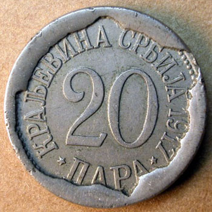

Dajte i meni toga
petek, 17. avgust 2007. u 10:07 AM
Piše: La Lara
Rubrike: Knjiga utisaka | Tabloid Buzz | Zdrav Stav
U lokalnoj bakalnici kupim TV Novosti. Ne znam kad sam poslednji put čitala te novine, ima bar decenija i po, mislim. Pa rekoh, da vidim kako stoji stvar u redovima starih asova tabloidnog novinarstva. Ali mi pažnju privuče nešto drugo.
Rubrika, odnosno kolumna se zove 'Srbija u olgedalu', naslov teksta je 'Slika Srbije', a autorka je renesansna i barokna Mirjana Bobić-Mojsilović (MBM).
Tema teksta je nedavno završeni festival u Guči.
Toliko spektakulrnih teza i zaključaka ne videh skoro na jednom mestu, a nije da ne tražim.
Elem, ovde se saznaju, između ostalih i sledeće istine (staviću ih po brojevima, ako želite možete da glasate, mada je teško opredeliti se):
1) "...priča o Srbiji, jednoj od retkih zemalja u kojoj se još živi opzšteno i u kojoj su ljudi radosni i spremni na dert, polako se širi etrom"
2) "Guča je kulturni, sociološki i politički fenomen, mitska tačka savremenog pozitivnog transa, srpska, autentična slamka spasa u ova šugava vremena"
3) "Guča je srpski brend - marka za trodnevni dobar život, ono malo pulsirajuće mesto na telu Evrope koje se još uvek ne predaje."
4) "Zato Guča postaje magnetski privlačna za svet u kome je buka zakonom zabranjena, a crveno meso i žestoki alkohol, u ime zdravlja, zamenjeni takozvanom 'tihom hranom' i antidepresivima.
5) "Onaj deo srpske javnosti, koji je svoj položaj i novac sticao javnim gađenjem prema Guči, ove godine je nekako zaćutao. Ako SI-En-En i Bi-Bi_Si izveštavaju o Guči kao o svetskom fenomenu, oni više neće imati šta da dodaju, osim što se ponegde moglo čuti kako je Velja Ilić nacionalista jer je rekao da se ove godine na Guči neće svirati 'Šota'."
6) "Pa, stvari su krenule na bolje - diplomatska aktivnost "Koštuničinog zločinačkog udruženja" kako ga besramno nazivaju profesionalni evropejci, počela je da daje plodove - Kosovo neće biti 'svršeni čin', sviranje trube nije dokaz zločinačke srpske prirode, braniti principe pravom, tradiciju trubom, a nacionalni ponos pevanjem himne 'Bože pravde' na pobedničkim postoljima, nije više politički nekorektno. Svet se promenio."
7) "Sve to zajedno, govori samo jedno - Srbija jeste u Evropi."
***
Ovakvi tekstovi, zajedno sa potpuno kontradiktornim izjavama ministara, pa i drugih zaduženih da javno iznose svoja mišljenja, o tome jel' nama ta Evropska unija uopšte neki cilj, čine takoreći spektakularnim rezultate istaživanja javnog mnjenja od ovog leta po kojima je dve trećine građana za priključenje EU. Ali zato, a možda i bitniji od tog načelnog stava, jeste ovaj podatak iz tog istraživanja koje je sproveo Stratedžik marketing: "Polovina građana naše zemlje nije spremna da se zarad ulaska u EU dodatno školuje, prekvalifikuje ili usavršava, a svaki treći ne bi zbog toga menjao stil života i rada".
 RSS feed
RSS feed
 sadržaji se objavljuju pod
sadržaji se objavljuju pod
Komentari
"Kome treba evropa, kad su svi oni u Guči"
u potpisu Velja Ilić - Autarhični
Goran Aničić | 17.08.07 11:32
Dakle, nisi u toku. Došlo je od promene kursa: odjednom su svi za Guču, a onaj koji pravi razliku između Guče i Exita, taj je out.
Paralela koja je povučena između ova dva branda, prva je brazda kojom Srbija ulazi u EU. Kada se na tom mestu ispiše znak jednakosti, mi ćemo već biti podeljeni patriote u Evropi i na izdajnike.
MBM tačno zna šta je IN. In je Guča u EU. Ko to ne razume, ne razume Srbiju :)))
Tatjana | 17.08.07 12:32
Ja uopšte nisam in, jer nikad nisam bila ni u Guči ni na Exitu, tako da nisam relevantna. Nego, evo još jednog citata: "Pokušaj da se od uspeha Guče, napravi politička priča koja bi kritikovala vlast, takođe je besmislen. Upravo taj 'narodni blok' pravi priču o Srbiji koja napokon valja. Koštunica i Velja Ilić otvaraju Guču, a Maja Gojković otvara Egzit. U čemu je proble?"
La Lara | 17.08.07 12:42
Ja sam primetio da petkom pise u Blicu i po pravilu su tekstovi tabloidni, sa nategnutim tezama i konstrukcijama koje nikako ne stoje. Opredeljena neka gospodja (ili je gospodjica?) ta MBM, ne ostavlja mnogo mesta za drugacije misljenje i dijalog, vec sve crno-belo. A ja Zvezdas...
kiko | 17.08.07 13:09
Nisam bio u Guči, nemam pojma kako sve to izgleda a i ne interesuje me,(kao ni exit). Mislim da su ti festivali prešli granice elementarne kulture. Doduše ovaj prvi nikad nije ni imao.
La lara: "U čemu je problem?"
pa nema problema, idemo na beer fest
šta nas briga za južnjake i Yankees :))
oki | 18.08.07 10:40
Jel' ona zapravo bila u Guči ili ovo salonsko teoretisanje?
ubipacijentic | 18.08.07 15:44
Ja mislim ovako: Recimo da je Guca fenomenalan etno festival. Ne mogu da poredim ni da ocenjujem, jer ne znam, ali npr. da je to tako i da je provod tu fenomenalan. Kakve to veze ima sa navodnom promenom sveta, sa nasim i stranim politicarima, sa Kosovom i 'profesionalnim Evropejcima', a jos gore sa logicki i fakticki nevalidnim tvrdnjama da se time nesto dokazuje o Srbiji ili prividjenjima da je Srbija neka jedina tacka gde se istinski uziva i raduje i zivi kako treba, opusteno i sve, e to mi je toliko nejasno da me samo vodi do poruke iz naslova posta
la lara | 20.08.07 22:42
Meni je najtuznija ona teza (ovde pod br. 4) da su ljudi koji teze zdravom zivotu i koji u sebe ne unose tone mesine i litre alkohola nekakvi jadnici ovisni o 'antidepresivima'. Nadje se tako neka baba da ti objasni neke stvari...
Mache s terase | 21.08.07 03:55
Skandalozno
Ljube | 21.08.07 09:15